|
Indeks: |
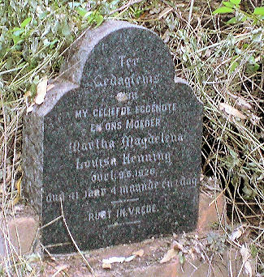
Mnr JAW (Koos) Groenewald van Pietersburg het onlangs laat weet dat hy die graf van Martha Magdalena Louisa Henning (gebore Groenewald) *Januarie 1886 op die plaas Mafafula 595 LT, sowat 15 km Suid van Tzaneen opgespoor het. Sy was die eggenote van b7.c13.d2. Gerhardus Albertus Frederik Henning *April 1873. Soos bykans alle plase in die Tzaneen distrik, is die regering tans in 'n proses om ook hierdie plaas weens 'n grondeis te koop.
Koos laat weet as volg: Die begraafplaas is baie dig begroeid met struike en lantana en daar is nie meer 'n heining om nie. Daar is ook 'n bynes in die boom langs die begraafplaas en ek wou dus nie te veel karring nie. Ek sal op 'n later stadium die struike gaan bespuit met Roundup en sodra hulle gevrek het, die begraafplaas opruim om te sien wie daar moontlik nog begrawe is. Ek sluit sommer ook 'n foto van die murasie van die Hennings se huis in wat naby die graf is. Let op hoe hoog die fondamente met klip opgebou is om die hoë voginhoud van die gronde daar gedurende die reënseisoen van die vloere af weg te hou.
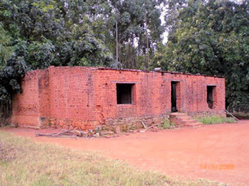

Ons kon byna al die Hennings wat gedurende die Tweede Vryheidsoorlog (1899 - 1902) in Konsentrasiekampe gesterf het, in hulle familiekring rekonstrueer. Daar was egter 12 persone wat ons nie positief kon identifiseer nie, weens onvoldoende gegewens. Diegene wat ons positief kon identifiseer, sowel as diegene wat ons nie positief kon identifiseer nie, kan in Hoofstuk 13, Deel 4 van die Familiekroniek (die boek en die laserskyf [CD]) gesien word.
Mnr Koos Groenewald, wat vir ons die gegewens oor die Tzaneen Henning's (hierbo) gestuur het, het ook vir ons 'n uittreksel van al die Henning's wat lidmate van die NG Kerk Pietersburg is/was en diegene wat daar gedoop is, gestuur. Tot ons verbasing, moes ons uitvind dat daar oor 'n tydperk van 120 jaar, baie meer Hennings hier gedoop en lidmate is/ was as wat ons bewus van was. Oor hierdie 120 jaar is 17 Henning babas hier gedoop en was 40 volwasse Henning's lidmate van die gemeente. Waar die gegewens wat ons op rekord gehad het, bygewerk kon word, het ons dit gedoen.
'n Baie belangrike ontdekking was egter dat ons drie persone ('n ma en twee van haar kindertjies), wat in die Pietersburg Konsentrasiekamp gesterf het en wie ons voorheen nie positief kon identifiseer nie, met die gegewens wat Koos verskaf het, in hulle familiekring kon rekonstrueer.
Die gegewens wat ons jare terug in die Transvaalse Argiefbewaarplek ten opsigte van konsentrasiekamp sterftes opgespoor het, het gelui dat drie persone, Susanna Maria Henning, 26 jaar oud, Susara Wilhelmina Henning, drie jaar oud en Pieter Jacob Henning, een jaar oud, van die plaas Welgevonden, Zoutpansberg in die Pietersburg Konsentrasiekamp gesterf het.
Uit die doopregisters van die NG Kerk Pietersburg kon ons bepaal dat die ma se naam inderwaarheid Susanna Magdalena was (met nooiensvan Van der Westhuizen en wie ons in die geslagsregister op rekord gehad het). Sy was die eerste eggenote van b6.c4.d3.e7. Johannes Christiaan Henning *5-2-1872. Susara Wilhelmina en Pieter Jacob (wat op 1-8-1899 gebore en 15-1-1900 gedoop is) was hulle tweede en derde kinders. Ons was nie bewus van Pieter Jacob nie want die pa, Johannes Christiaan het 'n paar jaar later, uit 'n tweede huwelik, weer 'n seuntjie met die naam Pieter Jacob gehad. Ons was bewus daarvan dat na die ma, Susanna Magdalena se dood, die kampowerhede hulle oudste dogtertjie, Martha Johanna Wilhelmina, wat op daardie stadium slegs ses jaar oud was, in die sorg van haar oupa en ouma Van der Westhuizen gelaat het.
Dit laat ons nou met slegs nege persone wat ons nie weet waar hulle in die geslagsregister inpas nie. Sommige van hierdie kindertjies het egter naamloos gesterf, want hulle is dood voordat hulle name gekry het. Die kampowerhede het nie die ouers se name aangeteken nie, gevolglik sal dit bykans onmoontlik wees om hulle te identifiseer.
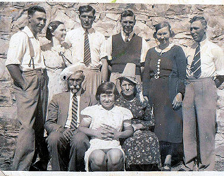 Hierdie foto het ons dieselfde tyd as die gegewens hierbo, vanaf 'n nasaat uit Johannes Christiaan se tweede huwelik ontvang. ">

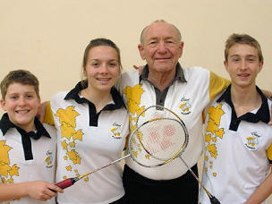
In die Haantjie van Februarie 2008 (Nr 93/Feb 2008) het ons berig oor Oupa Gideon (Giep) Henning (72) van die Strand en drie van sy kleinkinders wat al vier vir die Boland in hul onderskeie ouderdomsgroepe pluimbal speel.
Dit het nou onder ons aandag gekom dat bykans al die lede van hierdie familie kranige pluimbalspelers is. Giep is inderwaarheid die voorloper van hierdie pluimbal familie. Hy het Boland en later Oos-Transvaal verteenwoordig in die volgende amptelike Suid-Afrikaanse toernooie, Die Veterane (bo 35 jaar), Meesters (bo 50 jaar), Groot Meesters (bo 55 jaar), Silwer Arende (bo 60 jaar) en Goue Arende (bo 65 jaar).
Giep en sy vrou Wiena se oudste seun, Stanley, het ook uitstekend presteer deur verskeie jare die No 1 speler van die Maties te wees. Hy het ook die Boland Senior span in verskeie SA toernooie verteenwoordig. Na sy universiteitsopleiding het hy Wes-Transvaal verteenwoordig, waarna hy Oos-Transvaal se no 1 speler geword het. In dié tyd het hy geklim tot in die top 15 in die land. Die volgende een is Nina Goosen (Wilna se dogter) wat Onder 13 Boland verteenwoordig het en vanjaar op 16-jarige ouderdom het sy haar gevestig as Boland Onder 19 se nr 1 speler deur al die titels te verower in die Boland Onder 19 geslote kampioenskappe. Dan kom Bernard se drie seuns. Stephan wat Boland Onder 15 verteen-woordig het en Nardo wat Boland Onder 13 gehelp het om die Suid-Afrikaanse A-afdeling vanjaar te wen. Hy was ook eerste gekeur in die A-afdeling.
Lennert is nege jaar oud en het in die Boland Onder 13 B-span gespeel. Hy het tot die kwarteindrondte van die seuns enkels gevorder.
Pluimbal is 'n sport wat deur almal, van alle ouderdomme gespeel kan word. Dit is een van die vinnigste bal sporte in die wêreld en verg baie toewyding en puik reflekse.
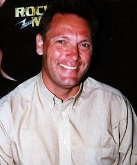

b7.c2.d3.e5.f2.g1. James Matthew Henning *27-11-1939 het vir ons vertel van sy seun, Pieter James wat nou in Australië woon en werk.
Pieter James is gebore op 27 Julie 1964 in Que-Que, Rhodesië. Hy gaan skool in Gwelo, Rhodesië en het op akademiese - en sportgebied puik presteer. Deurdat sy pa, James Matthew so betrokke was in die oorlog in Rhodesië en gereeld "in die bos" was, het Pieter en sy ma groot druk op hulle skouers gehad om al die pligte op die plaas uit te voer, asook om die boerdery aan die gang te hou. Van jongs af was hy baie selfstandig en het 'n goeie kop vir besigheid gehad.
Op 22 Mei 1982 vestig pa James Matthew en sy familie hulle in George, in die Suid-Kaap. Pieter sluit by Barclays Bank aan en kort daarna besluit hy om vrywillig Nasionale Diensplig te gaan doen. Hy rapporteer by Tempe, Bloemfontein, maar word baie gou na die operasionele gebied aan die Angola grens gepos, waar hy bykans sy hele diensplig tyd deurbring.
Terug by die werk, word hy as 'n senior beampte na die Graaf-Reinet tak verplaas. As nuut-getroude paartjie vind hy en sy vroutjie dit 'n stryd om op die bank se salaris uit te kom en aanvaar hy 'n pos by Teba Bank op die myne te Klerksdorp, met beter byvoordele en salaris. Hy word na Randfontein verplaas as Senior Beampte en kort daarna word hy as Distrik Bestuurder, Wes-Rand aangestel. Hier beleef hy 'n noue ontkoming toe rowers op hom in sy voertuig skiet, toe hy op pad na 'n bankkantoor by een van die skagte was.
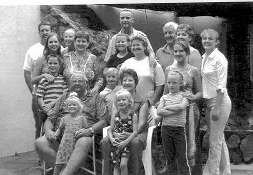
Terwyl hy hier werk, doen hy deeltyds studies by die Baptiste Kollege in Randburg, vir 'n lewe as predikant. Om met die geldsake te help, werk hy deeltyds by Multi-Ministries in Randburg en hier ontmoet hy Amerikaanse en Australiese beamptes in die sendingveld. Hy raak betrokke by hulle sendingwerk in Suidelike Afrika - Zimbabwe, Mosambiek, Zambië, Botswana en Namibië, en hy is kort-kort op toer. Hy word genooi om in Amerika te gaan studeer, asook om te gaan preek. Hy verwerf sy graad en word ook as top student en leier van die studente aangewys.
Hy ontvang 'n beroep na Ladysmith, Natal en dien vir vier jaar hier. Hy gaan ook dikwels Amerika toe vir verder opleiding. Hy word nou aangewys as dosent by die Opleidingsentrum in Amerika, vir opleiding van voltydse en deeltydse predikante in Suidelike Afrika. Hy word ook die pos van Direkteur van Multi Ministries aangebied om by die dienende direkteur oor te neem, wanneer hy aftree. Gedurende hierdie tyd werk hy nou saam met die Amerikaners en Australiërs. In Oktober 2007 kry Pieter 'n beroep vanaf die Dalby Baptiste Kerk in Australië. Hy was nog nooit in Australië nie en het hom op die wil van die Here verlaat. In sy eie woorde noem hy die volgende: "In my daaglikse lesings en boodskap wat ek nou aanhoudend vanaf die Here in sy woord ontvang, is dit baie duidelik dat Hy vir my in Australië aan die werk wil sit."
Hy aanvaar die pos as Senior Predikant van die Dalby Kerk en op 29 Mei 2008, 26 jaar na hy in Suid-Afrika aangekom het, vertrek hy en sy familie na Australië, waar hy nou gou moet aanpas by die taal, en nuwe kultuur van die mense daar. Daar is egter heelwat Rhodesiërs en Vrystaters in sy gemeente en hulle vind dit redelik maklik om aan te pas.

Soos gebruiklik meld ons graag die name van diegene wat donasies van R200.00 en meer oor die afgelope drie maande aangestuur het. Mnr TJ (Tjaart) Henning van Sinoville, Pretoria, 'n Lewenslange lid het 'n pragtige donasie van R1 000.00 gemaak; Mnr WNF (Willie) Henning van Karenpark, 'n Lewenslange lid - R250.00 en mnr AM (Andries) Kruger van Barberton - R200.00. Baie dankie manne! Dankie ook aan diegene wat maandeliks per debietorder bydra.
Ongelukkig is daar steeds 18 lede wat nog geen bydrae vir 2008 gemaak het nie en ons stuur al reeds die kennisgewings vir 2009 uit, waarin ons ons lede versoek om 'n bydrae vir die komende jaar te maak.
Afgesien van die feit dat ons in 2008 heelwat meer aan skryfbehoeftes en rekenaarverwante uitgawes moes spandeer, het ons onlangs ook 'n donasie van R1000.00 aan die Aliwal-Noord museum gestuur. Lees meer oor die stand van sake by die museum in die beriggie hier onder. As gevolg van die munisipaliteit van Aliwal-Noord se gesindheid moet goedgesinde persone en instansies self sorg dat hierdie waardevolle kulturele instrument bly voortbestaan ... en die Henning familie hét 'n groot belang by hierdie museum.

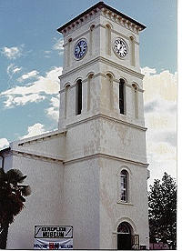
Weens die onbetroubaarheid van meeste munisipale besture in Suid-Afrika, is die toekoms van die Aliwal-Noord-museum en spesifiek die Kerkplein-museum in die weegskaal - en daarmee saam die Henning uitstalling in die Kerkplein museum. Die munisipaliteit van Aliwal-Noord weier om enige instandhouding by die Kerkplein-museum te doen, of om enige vergoeding of honorarium aan mev Madeleine Joubert, die kurator van al die museums in Aliwal-Noord te betaal. Sy kry inderwaarheid geen samewerking van hulle kant af nie, omdat "museums witmens dinge is, wat vernietig moet word". Sy verrig hierdie taak al vir meer as 21 jaar met groot onderskeiding op 'n vrywillige grondslag en wou al lankal uitgetree het vanweë ouderdom- en gesondheidsredes. Daar is egter niemand wat kans sien om hierdie taak onder hierdie omstandighede oor te neem nie.
'n Gerug is vanuit die munisipaliteit versprei dat hulle geen instandhouding aan die Kerkplein-museum se geboue doen nie, omdat dié museum se kontrak oor vyf jaar verstryk en die munisipaliteit nie die kontrak gaan hernu nie. Toe mev Joubert navraag doen of daar enige waarheid in die gerug steek (veral omdat daar werklik geen instandhouding gedoen word nie), is daar mondeling vir haar gesê dat hulle nie uitgesit sal word nie. Sy het nou 'n goedgesinde prokureur versoek om met die munisipaliteit te onderhandel vir 'n skriftelike verlenging van die kontrak.
Weens die feit dat mev Joubert vrou alleen beide museums moet behartig en voltyds by die hoof museum in Durbanstraat beskikbaar moet wees, is daar vir 'n paar jaar reeds nie meer enige toesig by die Kerkplein-museum nie en moet besoekers wat die Henning uitstalling wil gaan besigtig, die sleutels afhaal by die hoof museum.
Weens die feit dat meeste mense wat by die Kerkplein-museum opdaag, nie van hierdie reëling weet nie, het ons nou 'n versoek tot mev Joubert gerig om 'n toepaslike kennisgewing by die Kerkplein-museum op te sit.

'n Dag na die geboorte van Christan Janine Henning op 20 September 2008, ontvang ons 'n foto van haar en haar ouers. Ons was nog onder die indruk dat haar pa, b6.c1.d3.e5.f2.g4.h1.i2. Petrus Francois Joubert (Pieter) Henning ongetroud is. Ons doen toe navraag en hoor dat Pieter reeds op 11 Desember 2004 te Marble Hall getroud is met Chrisna Terblanche. Sy is die dogter van Jan Hendrik Schoeman Terblanche en sy vrou Christina Johanna (gebore Potgieter).
| 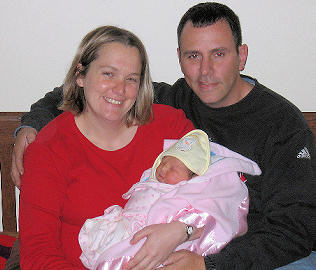 | 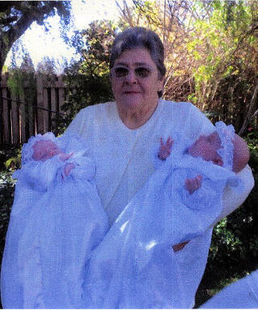 |
Pieter, wat 'n Doktorsgraad in Ingenieurswese het, is 'n dosent by die Ingenieurswese Fakulteit van die Universiteit van Johannesburg. Hulle woon in Heidelberg, aan die Suikerbosrand.
Johanna Jacoba Berindina (Sus) Henning, van Doringkruin, Klerksdorp en weduwee van wyle b5.c4.d3.e2.f1.g4. Stephanus Gerhardus (Fanie) Henning het vir ons laat weet dat sy onlangs weer oumagrootjie geword het - en hierdie keer van 'n tweeling. Op 2 April 2008 is Mikhayla - en Mia Enslin in Klerksdorp gebore. Hulle ouers is Schalk - en Nedine Enslin. Nedine is Fanie en Sus se oudste kleinkind.
Baie geluk oumagrootjie, Sus!

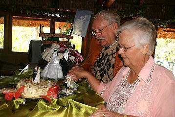
b6.c4.d1.e5.f9.g6. Mauritz Martin Henning *10-4-1936 van Theresa Park, Pretoria-Noord het vir baie jare lank met groot onderskeiding op die bestuur van die Familiebond gedien. Gedurende September 2008 het ons die volgende e-posbrief van Mauritz ontvang:
Hier by ons gaan dit goed en gesond. Dit is regte lenteweer en lekker warm bedags. Ek kan al met `n kortbroek rondloop wat `n seëning is na die winter wat nou al, soos dit voel, vir drie jaar aangehou het.
Ek is bly dat ons nie, soos ons aanvanklik beplan het, in hierdie tyd Kaap toe gegaan het nie. Dan het ons gedoriewaar verkluim. As die weer by julle so vrot bly sal julle maar tasse moet pak en in die Bosveld kom kuier. Hier is dit heerlik.
Ollie en ek was op Saterdag 30 Augustus 50 jaar getroud. Die kinders het almal geskakel om ons geluk te wens en ek en Ollie het die oggend na `n eetplek by Cullinan gery om dit te vier. My oudste dogter, Loma, het ons lank voor die tyd gevra om Sondag na kerk daar te kom eet soos wat sy telkemale doen. Toe ons die Sondag by hulle opdaag en by hulle huis inloop, is dit `n gedruis met `n troumars wat speel en "Streamers" wat na ons gegooi word. Al die kinders en kleinkinders was daar, ook dié vanaf Pietersburg.
Hulle het ons regtig verras want ons het van geen sout of water geweet nie.`n Mens besef nie hoe `n lang tydperk verloop het sedert ons mekaar op skool by Groblersdal leer ken het, saam aangeneem is en later verloof geraak het, getroud is en ons drie meisiekinders groot-gemaak het nie. Aan die anderkant voel dit soos gister. Ons is net geseënd!
Ek stuur vir jou `n foto saam toe ons die koek moes sny wat ons kleindogter gebak het. Die mannetjie en vroutjie daarop was ook op ons troukoek gewees.
Mauritz Henning

Hier aan die einde van die jaar wil hierdie haantjie al julle ander "haantjies" 'n geseënde Kersfees en 'n voorspoedige nuwe jaar toewens. Mag die Henning Familiebond in 2009 van krag tot krag gaan, want einde 2009 herdenk ons die vyf-en twintig jarige bestaan van die familiebond en uitgawe no 100 van die Nuusbrief
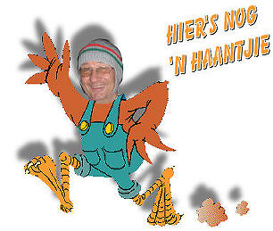